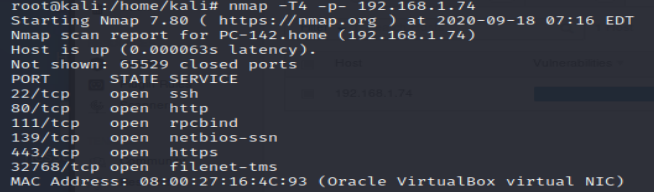

Nmap
- nmap -T4 -p- 192.168.1.74

- nmap -A -T4 -p22,80,111,139,443,32768 192.168.1.74
- Look at ports 80, 443 in priority
- ports 22, 139 : not big of a deal in internal network, must be checked if open on web scan